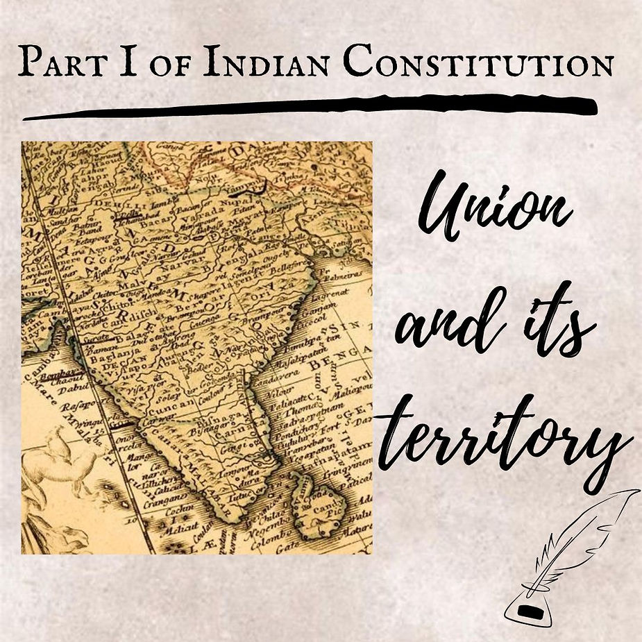
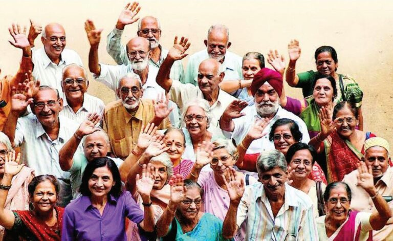
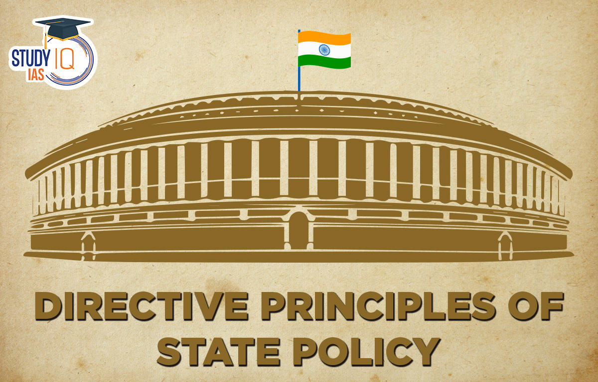

The Indian Constitution is the supreme law of India. It was adopted
by the Constituent Assembly on 26th November 1949 and came into
effect on 26th January 1950, marking the country's transition to a
republic. The Constitution is a comprehensive document that sets out
the framework and principles of governance in India. It establishes
the structure and powers of the government, delineates the
fundamental rights and duties of citizens, and safeguards the
democratic values and principles on which the nation is built. It
also provides for a system of checks and balances, ensuring a
separation of powers among the three branches of government. The
Indian Constitution is known for its resilience and adaptability,
having been amended several times to reflect changing social,
political, and economic realities. It is a testament to the
democratic spirit and aspirations of the Indian people.
Preamble
A preamble is an introductory statement in a document that explains
the document’s philosophy and objectives. In a Constitution, it
presents the intention of its framers, the history behind its
creation, and the core values and principles of the nation. The
preamble basically gives idea of the following things/objects:
Source of the Constitution Nature of Indian State Statement of its
objectives Date of its adoption

PART I The Union and its Territory
ARTICLES 1 TO 4 Article 1: Name and Territory of the Union
Article 2: Admission or establishment of new States
Article 3: Formation of new States and alteration of areas,
boundaries or names of existing States Article 4: Laws made
under articles 2 and 3 to provide for the amendment of the First and
the Fourth Schedules and supplemental, incidental and consequential
matters

PART II Citizenship
ARTICLES 5 TO 11
Article 5: Citizenship at the commencement of the Constitution
Article 6: Rights of citizenship of certain persons who have
migrated to India from Pakistan
Article 7: Rights of citizenship of certain migrants to Pakistan
Article 8: Rights of citizenship of certain persons of Indian origin
residing outside India
PART III Fundamental Rights
ARTICLES 12 TO 35ARTICLES 12 TO 35
Article 12: Definitions
Article 13: Laws inconsistent with or in derogation of the
fundamental rights
Right to Equality Article 14: Equality before law
Article 15: Prohibition of discrimination on grounds of religion,
race, caste, sex or place of birth
Article 16: Equality of opportunity in matters of public
employment
Article 17: Abolition of Untouchability
Article 18: Abolition of titles
Right to Freedom Article 19: Protection of certain rights regarding
freedom of Speech, etc.
Article 20: Protection in respect of conviction for offences
Article 21: Protection of life and personal liberty
Article 21A: Right to education
Article 22: Protection against arrest and detention in certain
cases
Right against Exploitation Article 23: Prohibition of traffic in
human beings and forced labour
Article 24: Prohibition of employment of children in factories,
etc.
Right to Freedom of Religion Article 25: Freedom of conscience and
free profession, practice and propagation of religion
Article 26: Freedom to manage religious affairs
Article 27: Freedom as to payment of taxes for promotion of any
particular religion
Article 28: Freedom as to attendance at religious instruction or
religious worship in certain educational institutions
Cultural and Educational Rights Article 29: Protection of interests
of minorities
Article 30: Right of minorities to establish and administer
educational institutions
Right to Property Article 31: Compulsory acquisition of property
(Omitted)
Saving of Certain Laws Article 31A: Saving of laws providing for
acquisition of estates, etc.
Article 31B: Validation of certain Acts and Regulations
Article 31C: Saving of laws giving effect to certain directive
principles
Article 31D: Saving of laws in respect of anti-national activities
(Omitted)
Right to Constitutional Remedies Article 32: Remedies for
enforcement of rights conferred by this Part
Article 32A: Constitutional validity of State laws not to be
considered in proceedings under article 32 (Omitted)
Article 33: Power of Parliament to modify the rights conferred by
this Part in their application to Forces, etc.
Article 34: Restriction on rights conferred by this Part while
martial law is in force in any area
Article 35: Legislation to give effect to the provisions of this
Part

PART IV
Directive Principles of State Policy
ARTICLES 36 TO 51
Article 36: Definition
Article 37: Application of the principles contained in this Part
Article 38: State to secure a social order for the promotion of welfare of the people
Article 39: Certain principles of policy to be followed by the State
Article 39A: Equal justice and free legal aid
Article 40: Organisation of village panchayats
Article 41: Right to work, to education and to public assistance in certain cases
Article 42: Provision for just and humane conditions of work and maternity relief
Article 43: Living wage, etc., for workers
Article 43A: Participation of workers in management of industries
Article 43B: Promotion of co-operative societies
Article 44: Uniform civil code for the citizens
Article 45: Provision for early childhood care and education to children below the age of six years
Article 46: Promotion of educational and economic interests of Scheduled Castes, Scheduled Tribes and other weaker sections
Article 47: Duty of the State to raise the level of nutrition and the standard of living and to improve public health
Article 48: Organisation of agriculture and animal husbandry
Article 48A: Protection and improvement of environment and safeguarding of forests and wild life
Article 49: Protection of monuments and places and objects of national importance
Article 50: Separation of judiciary from executive
Article 51: Promotion of international peace and security